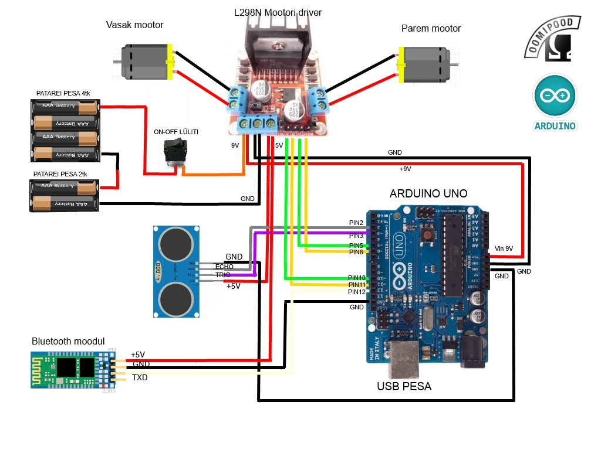

Iseliikuv auto, mis tõrjub oma teel olevaid takistusi. Pange kokku robot vastavalt antud skeemile või koosta enda skeem. Kasuta all antud koodi või kirjuta ise.

const int trigPin = 3;
const int echoPin = 2;
int dist_check1, dist_check2, dist_check3;
long duration, distance, distance_all;
int dist_result;
//MOTORS VARIABLES
const int mot1f = 6;
const int mot1b = 5;
const int mot2f = 11;
const int mot2b = 10;
int mot_speed = 225; //motors speed
int left_mot_speed = 225; //1 motors speed
int right_mot_speed = 225; //2 motors speed
int k = 0; //BRAKE
//LOGICS VARIABLES
const int dist_stop = 25;
//const int dist_slow = 40;
const int max_range = 800;
const int min_range = 0;
int errorLED = 13;
//INITIALIZATION
void setup() {
// Serial.begin(9600);
// bluetoothSerial.begin(9600);
pinMode(trigPin, OUTPUT);
pinMode(echoPin, INPUT);
pinMode(errorLED, OUTPUT);
}
//BASIC PROGRAM CYCLE
void loop() {
delay(1000);
goto start;
start:
int result = ping(); //Check distance
if (result <= min_range){ //Check min range
digitalWrite(errorLED, 1);
delay(500);
}
if (result == max_range || result > max_range){ //Check max range
digitalWrite(errorLED, 1);
delay(500);
}
if (result == dist_stop || result < dist_stop){ //Check stop range
digitalWrite(errorLED, 0);
motors_back();
delay(1000);
motors_stop();
delay(200);
motors_left();
delay(300);
motors_stop();
delay(200);
}
if (result > dist_stop){ //If all is OK, go forward
motors_forward();
delay(100);
}
goto start;
}
////***********************FUNCTIONS*******************************\\\\
int ping(){ //CHECK DISTANCE FUNCTION (3x)
digitalWrite(trigPin, 0);
delayMicroseconds(2);
digitalWrite(trigPin, 1);
delayMicroseconds(10);
digitalWrite(trigPin, 0);
duration = pulseIn(echoPin, 1);
distance = duration/58;
dist_check1 = distance;
digitalWrite(trigPin, 0);
delayMicroseconds(2);
digitalWrite(trigPin, 1);
delayMicroseconds(10);
digitalWrite(trigPin, 0);
duration = pulseIn(echoPin, 1);
distance = duration/58;
dist_check2 = distance;
digitalWrite(trigPin, 0);
delayMicroseconds(2);
digitalWrite(trigPin, 1);
delayMicroseconds(10);
digitalWrite(trigPin, 0);
duration = pulseIn(echoPin, 1);
distance = duration/58;
dist_check3 = distance;
int dist_check_sum;
dist_check_sum = dist_check1 + dist_check2 + dist_check3;
dist_result = dist_check_sum/3;
return dist_result;
}
void motors_forward(){ //MOTORS FORWARD FUNCTION
analogWrite(mot1f, right_mot_speed);
analogWrite(mot2f, left_mot_speed);
digitalWrite(mot1b, 0);
digitalWrite(mot2b, 0);
}
void motors_back(){ //MOTORS BACK FUNCTION
digitalWrite(mot1f, 0);
digitalWrite(mot2f, 0);
analogWrite(mot1b, mot_speed);
analogWrite(mot2b, mot_speed);
}
void motors_stop() { //MOTORS STOP FUNCTION
digitalWrite(mot1f, 1);
digitalWrite(mot2f, 1);
digitalWrite(mot1b, 1);
digitalWrite(mot2b, 1);
}
void motors_left() { //MOTORS LEFT FUNCTION
analogWrite(mot1f, mot_speed);
digitalWrite(mot2f, 0);
digitalWrite(mot1b, 0);
analogWrite(mot2b, mot_speed);
}
void motors_right() { //MOTORS RIGHT FUNCTION
digitalWrite(mot1f, 0);
analogWrite(mot2f, mot_speed);
analogWrite(mot1b, mot_speed);
digitalWrite(mot2b, 0);
}
void motors_foward_left() { //FORWARD LEFT FUNCTION
k = mot_speed*0.8;
analogWrite(mot1f, mot_speed);
analogWrite(mot2f, k);
digitalWrite(mot1b, 0);
digitalWrite(mot2b, 0);
}
void motors_foward_right() { //FORWARD RIGHT FUNCTION
k = mot_speed*0.8;
analogWrite(mot1f, k);
analogWrite(mot2f, mot_speed);
analogWrite(mot1b, 0);
analogWrite(mot2b, 0);
}
void motors_back_left() { //BACK LEFT FUNCTION
k = mot_speed*0.8;
digitalWrite(mot1f, 0);
digitalWrite(mot2f, 0);
analogWrite(mot1b, k);
analogWrite(mot2b, mot_speed);
}
void motors_back_right() { //BACK RIGHT FUNCTION
k = mot_speed*0.8;
digitalWrite(mot1f, 0);
digitalWrite(mot2f, 0);
analogWrite(mot1b, mot_speed);
analogWrite(mot2b, k);
}